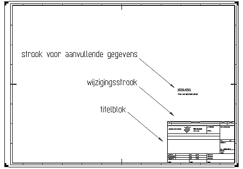

Titelblok, wijzigingsstrook en strook met aanvullende gegevens.
De tekening voorzien van een titelblok, en waar nodig van een wijzigingsstrook en een strook met aanvullende gegevens.
Het titelblok vermeldt projectgegevens en de status van de tekening. Andere benamingen voor titelblok zijn: stempel , (tekening)hoofd of identificatiestrook.
Plaats het titelblok rechtsonder in de tekenruimte.
Het type titelblok is afhankelijk van het formaat, we onderscheiden de volgende typen:
De wijzigingsstrook en de strook voor aanvullende gegevens boven het titelblok plaatsen.
voorbeeld:

Titelblok "normaal" voor A0, A1 en A2
Het titelblok 'normaal' (afmetingen 170*95 mm) voor de formaten A0, A1 en A2 ziet er als volgt uit::
 hfd-ax_wegen.pdf
hfd-ax_wegen.pdf
Open deze pdf door op de link te klikken of door op de link te gaan staan, druk de rechter muistoets en selecteer "Openen in nieuw venster"
De rand van het titelblok heeft een lijndikte van 0,5 mm en de lijnen binnen het titelblok een lijndikte van 0,25 mm. In het titelblok onderstaande vaste en vrije tekst opnemen. De vrije tekst die ingevuld moet worden is tussen { } aangegeven. Het in de tabel aangegeven lettertype en de letterhoogte geldt voor de vrije tekst. Gebruik kleine letters met uitzondering van de statusaanduiding en van de eerste letter van plaatsnamen en eigennamen.
| vak | inhoud | lettertype en -hoogte | ||
|---|---|---|---|---|
| A | Rijkswaterstaat Ministerie van Verkeer en Waterstaat | vaste tekst | ||
| 1 2 3 4 5 | dienst hoofdafdeling {naam van hoofdafdeling, evt afkorting} afdeling {naam van afdeling, evt afkorting} adres postcode; plaats | ISO 2,5 mm | ||
| 6 7 8 9 10 | bureau uitbesteding hoofdafdeling {naam van hoofdafdeling, evt afkorting} afdeling {naam van afdeling, evt afkorting} adres postcode; plaats | ISO 2,5 mm | ||
| 11 12 | {RW nummer} {traject (plaats A - plaats B)} | bv RW 23 bv Lemmer Meppel | ISO 5 mm ISO 3,5 mm | |
| 13 14 15 16 17 | {werkomschrijving} {projectfase} {soort tekening} {nadere omschrijving} {metrering} | bv verbreding afslag 23 bv studiefase bv geleiderailplan bv situatie bv km 10.000 - 12.000 | ISO 3,5 mm ISO 3,5 mm ISO 5 mm ISO 3,5 mm ISO 3,5 mm | |
| 18 19 | getekend {naam tekenaar} d.d. {datum} | ISO 2,5 mm | ||
| 20 21 | gecontroleerd {naam controleur} d.d. {datum} | ISO 2,5 mm | ||
| 22 23 | vrijgegeven {naam projectverantwoordelijke} d.d. {datum} | ISO 2,5 mm | ||
| 24 25 | akk. RWS {naam} datum {datum} | ISO 2,5 mm | ||
| 26 27 | formaat{A-formaataanduiding} schaal {1: schaal} | ISO 2,5 mm | ||
| 28 29 30 | behoort bij {besteknummer} in {aantal bladen} bladen, blad nr. {bladnummer} | ISO 2,5 mm | ||
| 31 32 32 | projectcode {code} dossiercode {code} dienstcode {code} opm: specifieke dienstcode bijv. topcode | ISO 2,5 mm | ||
| 34 | status {(concept/voorlopig/definitief/)} | ISO 5 mm | ||
| 35 | versie {versienummer} | ISO 5 mm | ||
| 36 | reg.nr. {tekeningnummer} | ISO 5 mm | ||
| 37 | {referentie1} opm: dienstspecifieke codes/referenties | ISO 1,8 mm | ||
| 38 | {referentie2} opm: dienstspecifieke codes/referenties | ISO 1,8 mm | ||
Titelblok "klein" voor A3 en A4
Het titelblok 'klein' (afmetingen 170*70 mm) voor de formaten A3 en A4 ziet er als volgt uit:
 hfd-A3A4_wegen.pdf
hfd-A3A4_wegen.pdf
Open deze pdf door op de link te klikken of door op de link te gaan staan, druk de rechter muistoets en selecteer "Openen in nieuw venster"
De rand van het titelblok heeft een lijndikte van 0,5 mm en de lijnen binnen het titelblok een lijndikte van 0,25 mm. In het titelblok onderstaande vaste en vrije tekst opnemen.De vrije tekst die ingevuld moet worden is tussen { } aangegeven. Het in de tabel aangegeven lettertype en de letterhoogte geldt voor de vrije tekst. Gebruik kleine letters met uitzondering van de statusaanduiding en van de eerste letter van plaatsnamen en eigennamen.
| vak | inhoud | lettertype en -hoogte | ||
|---|---|---|---|---|
| A | Rijkswaterstaat Ministerie van Verkeer en Waterstaat | vaste tekst | ||
| 1 2 3 4 5 | dienst hoofdafdeling {naam van hoofdafdeling, evt afkorting} afdeling {naam van afdeling, evt afkorting} adres postcode; plaats | ISO 2,5 mm | ||
| 6 7 8 9 10 | bureau uitbesteding hoofdafdeling {naam van hoofdafdeling, evt afkorting} afdeling {naam van afdeling, evt afkorting} adres postcode; plaats | ISO 2,5 mm | ||
| 11 12 | {RW nummer} {traject (plaats A - plaats B)} | bv RW 23 bv Lemmer Meppel | ISO 3,5 mm ISO 2,5 mm | |
| 13 14 15 | {werkomschrijving} {projectfase}-{soort tekening} {nadere omschrijving}-{metrering} | bv verbreding afslag 23 bv studiefase-geleiderailplan bv situatie-km 10.000 - 12.000 | ISO 2,5 mm ISO 2,5 mm ISO 2.5 mm | |
| 16 17 | getekend {naam tekenaar} d.d. {datum} | ISO 2,5 mm | ||
| 18 19 | gecontroleerd {naam controleur} d.d. {datum} | ISO 2,5 mm | ||
| 20 21 | vrijgegeven {naam projectverantwoordelijke} d.d. {datum} | ISO 2,5 mm | ||
| 22 23 | akk. RWS {naam} datum {datum} | ISO 2,5 mm | ||
| 24 25 | formaat{A-formaataanduiding} schaal {1: schaal} | ISO 2,5 mm | ||
| 26 27 28 | behoort bij {besteknummer} in {aantal bladen} bladen, blad nr. {bladnummer} | ISO 2,5 mm | ||
| 29 30 31 | projectcode {code} dossiercode {code} dienstcode {code} opm: specifieke dienstcode bijv. topcode | ISO 2,5 mm | ||
| 32 | status {(concept/voorlopig/definitief/)} | ISO 5 mm | ||
| 33 | versie {versienummer} | ISO 5 mm | ||
| 34 | reg.nr. {tekeningnummer} | ISO 5 mm | ||
| 35 | {referentie1} opm: dienstspecifieke codes/referenties | ISO 1,8 mm | ||
| 36 | {referentie2} opm: dienstspecifieke codes/referenties | ISO 1,8 mm | ||
Titelblok "extra klein" voor A4
Het titelblok 'extra klein' (afmetingen 180*47 mm) voor het formaat A4 staand ziet er als volgt uit:
 hfd-a4_wegen.pdf
hfd-a4_wegen.pdf
Open deze pdf door op de link te klikken of door op de link te gaan staan, druk de rechter muistoets en selecteer "Openen in nieuw venster"
De rand van het titelblok heeft een lijndikte van 0,5 mm en de lijnen binnen het titelblok een lijndikte van 0,25 mm. In het titelblok onderstaande vaste en vrije tekst opnemen. De vrije tekst die ingevuld moet worden is tussen { } aangegeven. Het in de tabel aangegeven lettertype en de letterhoogte geldt voor de vrije tekst. Gebruik kleine letters met uitzondering van de statusaanduiding en van de eerste letter van plaatsnamen en eigennamen.
| vak | inhoud | lettertype en -hoogte | ||
|---|---|---|---|---|
| A | Rijkswaterstaat Ministerie van Verkeer en Waterstaat | vaste tekst | ||
| 1 2 3 4 | dienst (hoofd)afdeling {naam van (hoofd)afdeling, evt afkorting} adres postcode; plaats | ISO 2,5 mm | ||
| 6 7 8 9 | bureau uitbesteding (hoofd)afdeling {naam van (hoofd)afdeling, evt afkorting} adres postcode; plaats | ISO 2,5 mm | ||
| 10 11 | {RW nummer} {traject (plaats A - plaats B)} | bv RW 23 bv Lemmer Meppel | ISO 3.5 mm ISO 2,5 mm | |
| 11 12 | {omschrijving 1 } {omschrijving 2} | bv verbreding afslag 23 bv studiefase | ISO 2,5 mm ISO 2,5 mm | |
| 13 14 | getekend {naam tekenaar} d.d. {datum} | ISO 2,5 mm | ||
| 15 16 | gecontroleerd {naam controleur} d.d. {datum} | ISO 2,5 mm | ||
| 17 18 | vrijgegeven {naam projectverantwoordelijke} d.d. {datum} | ISO 2,5 mm | ||
| 19 | akk. RWS {naam}-datum {datum} | ISO 2,5 mm | ||
| 20 21 | formaat{A-formaataanduiding} schaal {1: schaal} | ISO 2,5 mm | ||
| 22 23 24 | behoort bij {besteknummer} in {aantal bladen} bladen, blad nr. {bladnummer} | ISO 2,5 mm | ||
| 25 26 27 | projectcode {code} dossiercode {code} dienstcode {code} opm: specifieke dienstcode bijv. topcode | ISO 2,5 mm | ||
| 28 | status {(concept/voorlopig/definitief/)} | ISO 2,5 mm | ||
| 29 | versie {versienummer} | ISO 2,5 mm | ||
| 30 | reg.nr. {tekeningnummer} | ISO 2,5 mm | ||
| 31 | {referentie1} opm: dienstspecifieke codes/referenties | ISO 1,8 mm | ||
| 32 | {referentie2} opm: dienstspecifieke codes/referenties | ISO 1,8 mm | ||
Indien wijzigingen in een reeds vrijgegeven tekening aangebracht worden, de aard van deze wijzigingen in de wijzigingsstrook vermelden. De wijzigingsstrook ziet er voor alle formaten als volgt uit:

De rand van het titelblok heeft een lijndikte van 0,5 mm en de lijnen binnen de wijzigingsstrook een lijndikte van 0,25 mm. In het titelblok onderstaande vaste en vrije tekst opnemen. De vrije tekst die ingevuld moet worden is tussen { } aangegeven. Het in de tabel aangegeven lettertype en de letterhoogte geldt voor de vrije tekst. Gebruik kleine letters met uitzondering van de statusaanduiding en van de eerste letter van plaatsnamen en eigennamen.
| vak | inhoud | lettertype en -hoogte |
|---|---|---|
| 1 | {nummer of letter van de wijziging} | ISO 2,5 mm |
| 2 | {omschrijving van de wijziging} | ISO 2,5 mm |
| 3 | {datum} | ISO 2,5 mm |
| 4 | {paraaf projectverantwoordelijke RWS} |
Strook met aanvullende gegevens
Aanvullende gegevens in een aparte strook, boven het titelblok c.q. wijzigingsstrook opnemen. Deze strook mag zich naar boven uitstrekken tot aan het kader. Bovenin de strook de tekst "VERKLARING:" plaatsen. Het lettertype van deze tekst heeft een letterhoogte van 5.0 mm. Voorbeelden van items die in de aanvullende strook kunnen voorkomen zijn: